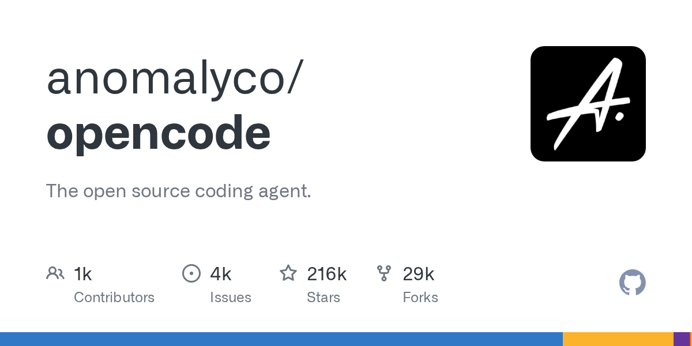
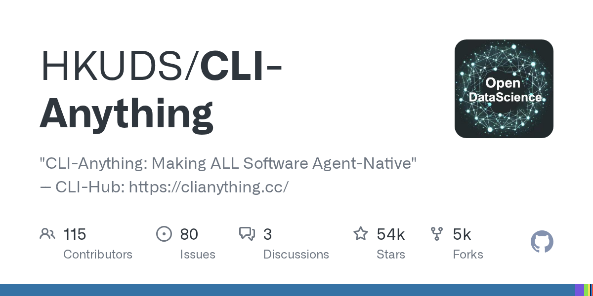
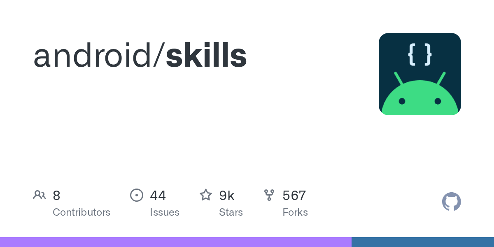
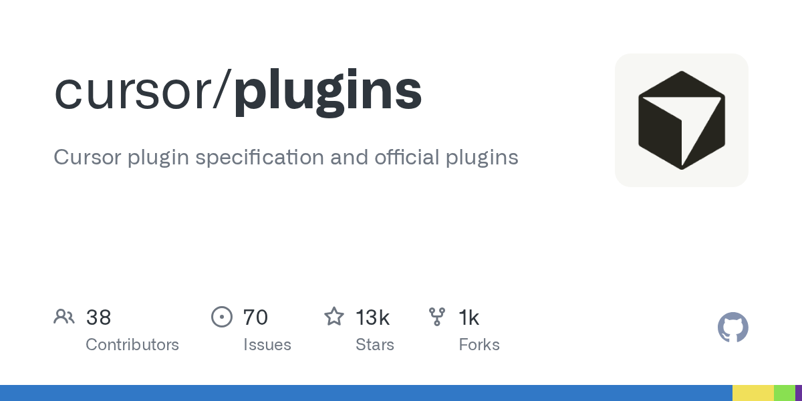

科技日报 | 2026-10-18
2026 年 10 月 18 日 周六 · GitHub Trending + Hacker News
今日关键词：密钥泄露、结果计费、数字所有权。
HN 榜首是一则安全事件：OpenCode 承认旧系统被入侵，用户保存的第三方模型密钥可能已泄露；同一天，它的仓库还挂在 GitHub Trending 第三名。一边是狂飙的采用速度，一边是补不上的信任缺口，这就是今天最值得看的一组对照。
一、GitHub Trending 今日热门 TOP 10
数据来自 2026-10-18 的 GitHub Trending 页面快照（Wayback Machine 存档，UTC 20:26），按"今日新增 Star"排序。
1. MadsLorentzen/ai-job-search —— 把求职流程做成 Agent

🏷️ 基本信息
- 语言：Python
- 总 Star：53,162
- 今日新增：+2,213（今日第一）
- 地址：https://github.com/MadsLorentzen/ai-job-search
📖 项目介绍
一个跑在本地机器上的求职框架，基于 Claude Code 构建：评估职位、定制简历、写求职信、准备面试，把求职拆成一条可复用的 Agent 流水线。
✨ 技术亮点
- 全流程本地运行，简历和求职记录不经过第三方 SaaS；
- 不是"一键海投"，而是把每个环节做成可检查、可修改的步骤；
- 用 Claude Code 的技能与工具机制组织任务，结构清晰。
🎯 适合场景
正在找工作、希望批量处理职位但不想牺牲定制化的人；也适合作为"垂直领域 Agent"的参考实现。
📚 学习价值
求职是典型的"高重复 + 强个性化"任务，正好卡在自动化与人工判断之间。看它如何划分步骤、在哪里保留人工确认，比看它用了什么提示词更有价值。
2. debpalash/VoiceStudio —— 本地版 ElevenLabs

🏷️ 基本信息
- 语言：Python
- 总 Star：75,350
- 今日新增：+2,098
- 地址：https://github.com/debpalash/VoiceStudio
📖 项目介绍
完全本地运行的语音工作台：声音克隆、音色设计、视频配音、听写、转写、有声书制作，覆盖 646 种语言，目标是对标 ElevenLabs。
✨ 技术亮点
- 声音数据不出本机，隐私敏感场景可用；
- 克隆、合成、配音、转写一条链打通；
- 语言覆盖面在开源语音项目里属于第一梯队。
🎯 适合场景
播客与短视频配音、有声书生产、企业内部培训、需要数据合规的语音产品原型。
📚 学习价值
想理解"语音克隆产品"由哪些模块组成，这个仓库是一张完整地图：声纹提取、TTS、对齐、后处理、批量调度。
3. anomalyco/opencode —— 今天最有争议的第三名

🏷️ 基本信息
- 语言：TypeScript
- 总 Star：216,581
- 今日新增：+1,417
- 地址：https://github.com/anomalyco/opencode
📖 项目介绍
开源编码 Agent，也是今天 HN 榜首安全事件的主角。项目本身仍在快速增长，官方已就密钥泄露发布提醒（详见下文 HN 第一条）。
✨ 技术亮点
- 终端里的编码 Agent，支持多种模型供应商；
- 开源、可自托管，社区生态活跃；
- 围绕它已经长出插件、记忆、编排等一整圈工具。
🎯 适合场景
希望把编码 Agent 接进自己工作流、且愿意自行审查安全的团队。
📚 学习价值
它是一个很好的反面教材：采用速度和信任建设可以完全脱节。读它的 issue 和这次事件的讨论，比读功能文档更有收获。
4. anthropics/claude-plugins-official —— 官方插件目录

🏷️ 基本信息
- 语言：Python
- 总 Star：42,685
- 今日新增：+1,187
- 地址：https://github.com/anthropics/claude-plugins-official
📖 项目介绍
Anthropic 官方维护的 Claude Code 高质量插件目录，相当于给 Agent 生态发了一张"官方认证清单"。
✨ 技术亮点
- 官方筛选，降低装到恶意插件的概率；
- 统一入口，省去在社区里逐个淘插件；
- 与 Claude Code 的插件机制深度绑定。
🎯 适合场景
刚上手 Claude Code、需要一套可靠起点的团队。
📚 学习价值
插件目录是 Agent 生态的"应用商店"。它怎么定义质量标准、怎么处理权限，决定了整个生态能长多大。
5. stablyai/orca —— 管理一整支 Agent 舰队

🏷️ 基本信息
- 语言：TypeScript
- 总 Star：96,634
- 今日新增：+1,146
- 地址：https://github.com/stablyai/orca
📖 项目介绍
面向"多 Agent 协作"的工作台：可以用自己的订阅运行任意编码 Agent（如 Grok Bot、Claude Code），统一管理一组并行工作的智能体。
✨ 技术亮点
- 多 Agent 并行，而不是一次只开一个会话；
- 支持自带订阅，不必绑定某一家 API；
- 把"派活、观察、收结果"做成统一界面。
🎯 适合场景
同时推进多个任务的重度用户、需要并行探索方案的小团队。
📚 学习价值
多 Agent 的难点从来不是"开几个"，而是任务怎么分、结果怎么合、冲突怎么解。这类工具正在把这些问题产品化。
6. HKUDS/CLI-Anything —— 让所有软件都能被 Agent 调用

🏷️ 基本信息
- 语言：Python
- 总 Star：54,594
- 今日新增：+582
- 地址：https://github.com/HKUDS/CLI-Anything
📖 项目介绍
"Making ALL Software Agent-Native"：把各种软件包装成 Agent 可调用的 CLI 接口，并提供一个 CLI-Hub 作为集散地。
✨ 技术亮点
- 用 CLI 作为万能适配层，绕开各家 API 的差异；
- 覆盖面广，从开发工具到日常软件；
- Agent 通过命令行即可操作，权限边界相对清晰。
🎯 适合场景
需要让 Agent 操作现有软件、又没有官方 API 的场景。
📚 学习价值
它押注了一个朴素判断：命令行是人与机器、机器与机器之间最稳定的契约。在 MCP 之外，这是一条值得关注的路线。
7. akitaonrails/ai-memory —— 给编码 Agent 做长期记忆

🏷️ 基本信息
- 语言：Rust
- 总 Star：10,481
- 今日新增：+513
- 地址：https://github.com/akitaonrails/ai-memory
📖 项目介绍
为编码 Agent 提供长期记忆，并支持在不同厂商的 Agent 之间交接工作——今天用 Claude Code，明天换别的工具，上下文不必从零开始。
✨ 技术亮点
- Rust 实现，强调性能与稳定性；
- 记忆跨会话持久化；
- 跨厂商交接，避免被单一工具锁定。
🎯 适合场景
长期项目、多人多 Agent 协作、需要在不同编码工具之间切换的团队。
📚 学习价值
"记忆"正在从模型能力变成基础设施。谁能把记忆做成人人可以接手的格式，谁就掌握了 Agent 工作流的切换成本。
8. ruvnet/ruflo —— 多 Agent 编排框架

🏷️ 基本信息
- 语言：TypeScript
- 总 Star：76,516
- 今日新增：+502
- 地址：https://github.com/ruvnet/ruflo
📖 项目介绍
自称"the original agent harness"：部署多智能体集群、协调自主工作流、构建对话式 AI 系统。
✨ 技术亮点
- 面向"群体"而非单个 Agent 的编排；
- 支持复杂工作流与角色分工；
- TypeScript 生态，接入前端与 Node 服务方便。
🎯 适合场景
需要多个 Agent 分工协作的自动化流程、研究型项目。
📚 学习价值
多 Agent 系统的成败往往取决于协调层，而不是单个 Agent 有多聪明。看它如何定义角色、通信和失败处理，比看演示更重要。
9. android/skills —— 安卓官方的 Agent 技能库

🏷️ 基本信息
- 语言：Kotlin
- 总 Star：8,770
- 今日新增：+381
- 地址：https://github.com/android/skills
📖 项目介绍
Android 官方的、面向 AI 优化的模块化 Agent 技能集合，遵循开放的 Agent Skills 标准。
✨ 技术亮点
- 官方出品，覆盖 Android 开发的关键任务；
- 模块化技能，可按需组合；
- 遵循开放标准，不绑定单一 Agent 产品。
🎯 适合场景
用 Agent 开发 Android 应用、或需要让 Agent 理解安卓工程规范的团队。
📚 学习价值
平台方亲自下场做技能库，说明 Agent Skills 正在成为新的"SDK"——以后评价一个平台，可能要看它有没有一套好用的技能。
10. cursor/plugins —— Cursor 的插件规范

🏷️ 基本信息
- 语言：TypeScript
- 总 Star：12,741
- 今日新增：+351
- 地址：https://github.com/cursor/plugins
📖 项目介绍
Cursor 的插件规范与官方插件集合，给编辑器里的 Agent 能力划定扩展边界。
✨ 技术亮点
- 官方规范 + 示例插件，降低开发门槛；
- 与 Cursor 编辑器深度集成；
- 用插件机制扩展 Agent 的工具与技能。
🎯 适合场景
想给团队定制编码助手、或开发 Cursor 插件的开发者。
📚 学习价值
编辑器、插件、技能三层结构正在趋同。理解这套分层，就能看懂 Claude Code、Cursor、Android 各家生态的共同套路。
二、Hacker News 今日热榜 TOP 10
统计窗口：北京时间 2026-10-18 00:00–24:00，按 points 排序并去重。
| # | 标题 | 热度 | 讨论 |
|---|---|---|---|
| 1 | OpenCode Hacked: User credentials leaked | 942 | 174 |
| 2 | Meta Takes Down No Kings Instagram During Protest Day | 566 | 388 |
| 3 | DeepSeek search and fetch – $0.75 per 1000 successful requests | 543 | 257 |
| 4 | NY announces game ownership bill | 426 | 197 |
| 5 | Gold is now the top U.S. export | 406 | 224 |
| 6 | The Elizabeth Holmes documentary is deceiving | 362 | 512 |
| 7 | RepRapMicron | 326 | 54 |
| 8 | Show HN: Sphinx – quiz you on your AI's code before shipping | 241 | 85 |
| 9 | macOS 15.8.2 Breaks OpenGL | 234 | 244 |
| 10 | I Became a Citizen of Japan | 222 | 169 |
1️⃣ OpenCode 被入侵：你的模型密钥可能已经泄露
OpenCode 团队在 X 上发布声明，核心信息有三点：
- 发现有未经授权访问，入口是一个正在下线过程中的旧系统；
- 用户保存在工作区里的第三方供应商密钥（例如 OpenAI、Anthropic）可能已经暴露；
- 建议用户立刻到对应供应商后台吊销并更换密钥。
这不是"模型被越狱"或"代码被篡改"，而是凭据泄露。但它的后果可能更直接：拿到密钥的人可以用你的账户调用模型、消耗额度，甚至以你的名义发起大规模请求。
HN 的讨论集中在两个方向：
1. 披露是否足够透明：有人质疑官方只给了结论，没有说明泄露范围、时间窗口和是否被利用；也有人指出调查仍在进行，过早公布细节可能帮倒忙。
2. "开源"不等于"安全"：OpenCode 是开源的，但它同时提供云端工作区，密钥会被上传到服务端。开源的是代码，不是你的数据路径。
最讽刺的一幕是：同一时间，opencode 仓库还挂在 GitHub Trending 第三名，今日新增 1,417 星。采用曲线和信任曲线，完全可以背道而驰。
给所有 Agent 用户的行动项（今天就做）：
- 检查你在各类编码 Agent、插件、云端工作区里保存过哪些 API Key；
- 凡是用过的，全部吊销重发，不要只改密码；
- 给每个 Key 设置独立的额度上限，出问题时把损失关在笼子里；
- 在账单页面看一眼最近有没有异常调用。
2️⃣ 抗议日，Meta 下架了 "No Kings" 的 Instagram 账号
在抗议活动当天，Meta 将 "No Kings" 相关的 Instagram 账号下架，约 90 分钟后恢复。
90 分钟不算长，但足够说明一个问题：平台拥有随时让一个组织"消失"的能力，而当事人几乎没有申诉窗口。HN 的 388 条讨论里，争论的焦点不是这次具体对不对，而是这套机制本身：
- 下架的决定由谁做出、依据什么规则？
- 恢复之后，期间的传播损失谁来承担？
- 如果是"误判"，为什么误判总是发生在最敏感的时刻？
这类事件每次都会重复同一个结论：平台的 moderation 权力，本质上是基础设施权力。只要你的组织、业务、内容完全生长在某一个平台上，你就默认接受了它的"临时关停权"。
3️⃣ DeepSeek 把联网搜索做成了"按结果计费"
DeepSeek 上线了 Search 与 Fetch 两个 API，给 Agent 和 RAG 应用提供实时网页内容：
- Search：用自研搜索引擎检索网页，返回结构化结果；
- Fetch：抓取单个网页，直接返回 Markdown；
- 接口地址：
https://api.deepseek.com/v1/tools/search与/v1/tools/fetch； - 鉴权沿用 DeepSeek API 的 Bearer Token。
真正值得关注的是计费方式：
| 项目 | 价格 |
|---|---|
| Search | 每 1,000 次成功请求 $0.75 |
| Fetch | 每 1,000 次成功请求 $0.75 |
换算下来，一次成功调用约 0.00075 美元。而且规则写得很清楚：
- 失败不收钱：超时、空结果、非 200 响应都不计费；
- 返回多少条结果不影响价格，
count参数只控制数量； - Search 和 Fetch 各自限速 5 QPS，互不占用额度；
- 通过 DeepSeek Harness、Claude Code、Codex 触发的服务端调用，目前免费，2026 年 11 月 1 日北京时间 0 点开始按请求计费。
为什么这是个信号：过去大家习惯按 token 计费，而联网搜索的 token 消耗极不稳定——一次抓取可能几百字，也可能几万字。按"成功请求"计价，把不确定性从用户身上挪回了供应商，也更接近"为结果付费"。
对 Agent 开发者来说，这意味着联网能力正在变成和水电一样的基础设施：便宜、按次、失败免费。剩下的竞争力，在于你怎么用它。
4️⃣ 纽约提出游戏"所有权"法案：买了就该拥有
一位来自纽约的议员提出法案，要求游戏厂商向消费者出售所有权，而不是许可证；同时还要求发行商在停止支持后，继续保证游戏可运行。
这两条正好打在数字游戏的两个痛点上：
1. "购买"其实是长期租赁：你付了全款，但拿到的是一份可撤销的许可。服务器一关、商店一下架，游戏就"消失"了。
2. 停服即报废：很多单机游戏也要求联网验证，厂商停止支持后，玩家手里的正版反而玩不了。
这正是 "Stop Killing Games" 运动持续多年的诉求。法案能否通过是另一回事，但它把一个长期被合同条款掩盖的问题摆上了台面：当"买"这个字被重新定义，消费者需要新的保护。
对做数字产品的人也是一个提醒：你的用户以为他们在买什么，和你实际卖的是什么，最好别差太远。
5️⃣ 黄金成了美国最大的出口商品
据 Numismatic News 报道，黄金已经超过此前的各类商品，成为美国最大的出口项目。
这条新闻在 HN 上引发 224 条讨论，因为它的"反直觉"很强：美国不是芯片、飞机、农产品出口大国吗？怎么轮到黄金了？
关键在于黄金的双重身份：
- 它既是商品，也是金融资产；
- 高金价会直接把金条、金币的出口金额推高，哪怕实物吨数没有同步增长；
- 在国际收支统计里，贵金属流动往往反映的是资本流动和避险需求，而不是制造业竞争力。
所以这条数据的正确读法是：它说明的是金融环境，不是产业实力。看到"某某成为最大出口"这类标题时，先问一句：统计的是金额，还是数量？
6️⃣ 一部关于 Theranos 的纪录片，被指"在操纵观众"
The Profile 的作者 Polina Pompliano 发文，直指关于 Elizabeth Holmes 的纪录片《You Can See Everything》具有欺骗性——不是事实错误，而是叙事手法在操纵观众的情绪。
HN 上 512 条讨论，是今天评论最多的条目。大家争的其实不是 Holmes 有没有罪，而是一个更普遍的问题：
- 纪录片用配乐、剪辑、采访对象的选择，替观众完成了判断；
- 当"坏人"被塑造成有魅力的悲剧人物，观众会不自觉地把同情当成理解；
- 反过来，当一个人被塑造成纯粹的符号，他/她的复杂性也被抹掉了。
这件事和 AI 有什么关系？ 关系很大。今天我们获取信息的渠道，越来越多地经过推荐算法和生成模型，而它们和纪录片导演一样，都在做"选择给你看什么"。媒介素养的核心，不是分辨真假，而是意识到自己正在被怎样引导。
7️⃣ RepRapMicron：把开源 3D 打印推进到微米级
RepRap 是"自我复制的 3D 打印机"运动的起点，十多年来一直在证明一件事：便宜的机器，加上开放的社区，可以做出工业级之外的另一条路。
RepRapMicron 是这个谱系里的新项目，目标是把增材制造的精度推到微米尺度。项目文档放在 GitHub Wiki 上，硬件、思路、进展都公开。
它现在更像一个"实验记录"而不是成熟产品，但 HN 给了 326 分，说明大家对"低成本微纳制造"这件事有真实兴趣。
为什么值得关注：如果微米级打印真的能被爱好者在桌面上复现，受影响的就不只是模型和手办——微流控芯片、传感器、微型机械都可能受益。开源硬件的价值，往往要十年才能看出来。
8️⃣ Sphinx：发布前，先让 AI"考考你"
Sphinx 是一个 Show HN 项目，定位很妙：在你把 AI 写的代码发布出去之前，先弹出问题考考你。
它的逻辑是：
- Agent 生成了一段 diff，你准备提交；
- 钩子拦截，围绕这段代码提问：它改了什么？边界条件是什么？失败了会怎样？
- 你答得上来，才放行。
这直击一个正在蔓延的问题：代码是 AI 写的，责任却是人签的字。很多事故不是因为代码难，而是因为提交的人根本没读懂。
这个思路未必适合所有团队（它会拖慢节奏），但它提出了一个正确的问题：在 AI 时代，"我审过了"到底应该意味着什么？
9️⃣ macOS 15.8.2 更新，弄坏了 OpenGL
Apple 开发者论坛上出现大量反馈：升级到 macOS 15.8.2 后，OpenGL 出现故障。
OpenGL 在苹果生态里早已被"弃用但未移除"很多年，官方主推 Metal。但现实中仍有大量软件依赖它：
- 老游戏和模拟器；
- 科研与工业软件；
- 一些不再维护、但仍在生产环境运行的工具。
这件事提醒我们："弃用"不等于"可以随便弄坏"。一个 API 只要还有人在用，它的稳定性就是事实上的契约。对大厂尤其如此——升级一次系统，可能让一批长尾用户的工具集体失效。
🔟 我成为了日本公民
Derek Wessman 写了一篇很实在的入籍记录。他没有把它写成"攻略"，而是把过程的不透明讲清楚了：
- 日本政府有意把入籍流程设计得不透明、材料繁多、至少耗时一年，结果还部分依赖主观判断；
- 材料清单"看起来很吓人"，每个人的情况都不同；
- 他建议真正想申请的人，直接去当地法务局咨询，按官方说的做，而不是照搬网上的经验。
这类文章的价值，在于它把"移民"从抽象的政策讨论，还原成了一个人跑窗口、填表格、等结果的几年。HN 的讨论也从流程延伸到了身份认同：成为另一个国家的公民，到底意味着放弃什么、获得什么。
三、今日趋势观察
1. Agent 生态正在经历"信任赤字"
今天最强烈的对照，是 OpenCode：HN 榜首是它的安全事故，GitHub 第三是它的新增星数。
与此同时，Claude 插件目录、Cursor 插件规范、Android 官方技能库都在榜上——整个生态在快速"应用商店化"。但插件越多、云端工作区越多、密钥越集中，单点失守的代价就越大。
接下来一年，Agent 工具的竞争会多出一个维度：不是谁的功能够强，而是谁能让用户放心地把密钥交出来。
2. 从"能干活"到"能交接"
ai-memory 做跨厂商记忆交接，orca 做多 Agent 舰队，ruflo 做群体编排，CLI-Anything 让存量软件可被调用。
这些项目指向同一个阶段目标：Agent 不再是一个会话，而是一支可以交接、可以并行、可以审计的劳动力。谁能把"交接成本"降下来，谁就更容易进入真实团队。
3. 计费方式开始对齐"结果"
DeepSeek 的搜索 API 按成功请求收费，失败免费。这不是简单的降价，而是把计价单位从"消耗"换成了"交付"。
当模型能力趋于同质化，商业模式的差异会变得比跑分更重要。对开发者来说，这意味着可以更大胆地重试、降级和兜底——因为失败的尝试不再产生账单。
4. "所有权"成了一个跨领域的关键词
- 游戏：买了，到底是拥有还是租用？
- 密钥：存在云端的凭据，到底属于谁、谁能看？
- 身份：换一本护照，意味着什么？
看似无关的三条新闻，背后是同一个问题：当越来越多的东西变成"服务"，我们对"拥有"的直觉就失效了。法律、产品和基础设施，都还没跟上。
数据来源
- GitHub Trending：https://github.com/trending?since=daily（Wayback Machine 2026-10-18 20:26 UTC 快照）
- Hacker News：hn.algolia.com，北京时间 2026-10-18 全天，按 points 排序并去重
- 图片：GitHub OpenGraph 卡片
日报由自动化管线生成，数据以原始链接为准。